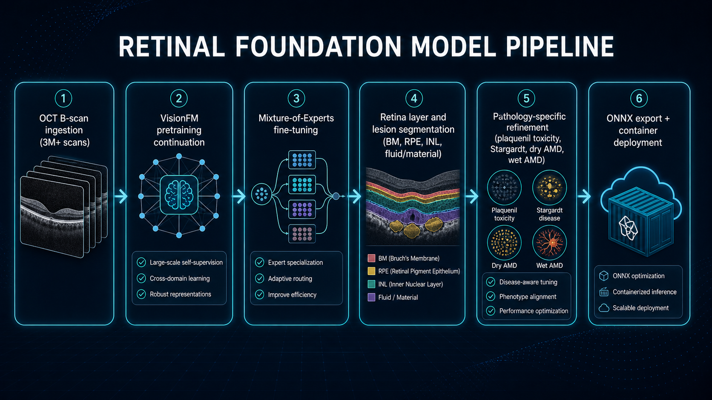

Foundation-model pipeline for retinal OCT: continue VisionFM pretraining at scale, fine-tune layer and lesion segmentation, then export ONNX models for fast container deployment.
This planned pipeline extends a retinal foundation-model strategy from ingestion through deployment. The objective is robust segmentation for both common and complex retinal pathologies while keeping inference portable and fast.
The design uses continuation pretraining, Mixture-of-Experts fine-tuning, pathology-specific specialization, and ONNX export for cross-environment deployment in containers.

Collect and standardize large-scale retinal B-scan datasets for stable training and evaluation.
Continue VisionFM pretraining to align embeddings with retinal morphology at scale.
Use MoE fine-tuning for robust layer and lesion segmentation under varied pathology patterns.
Further tune for Plaquenil toxicity, Stargardt, dry AMD, wet AMD, and other complex findings.
Export ONNX variants and package model execution for fast, portable inference across environments.